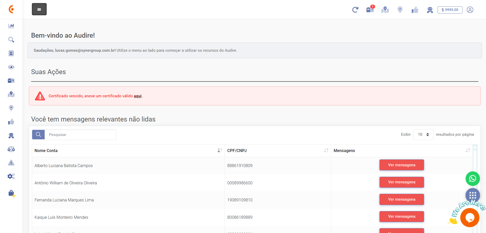
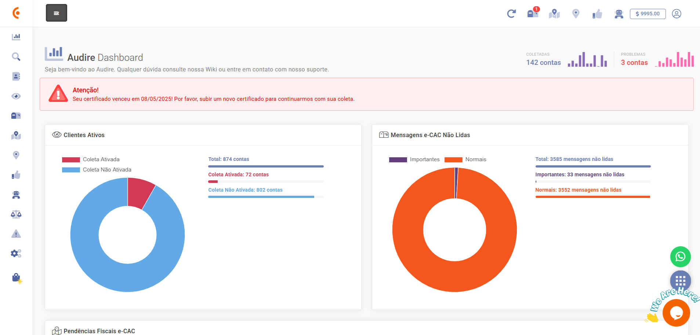
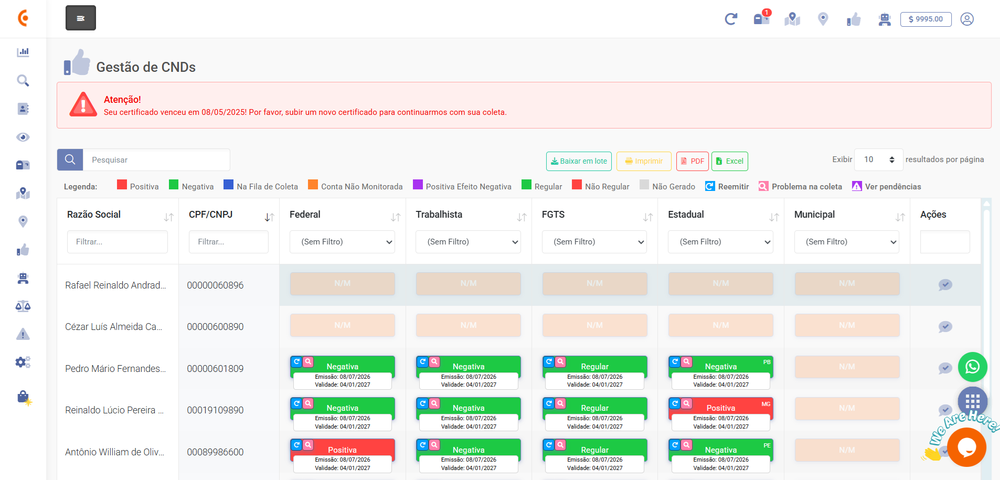
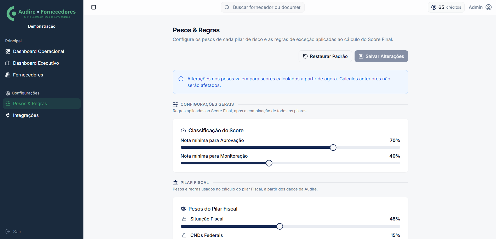
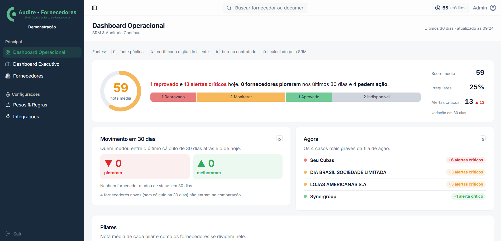
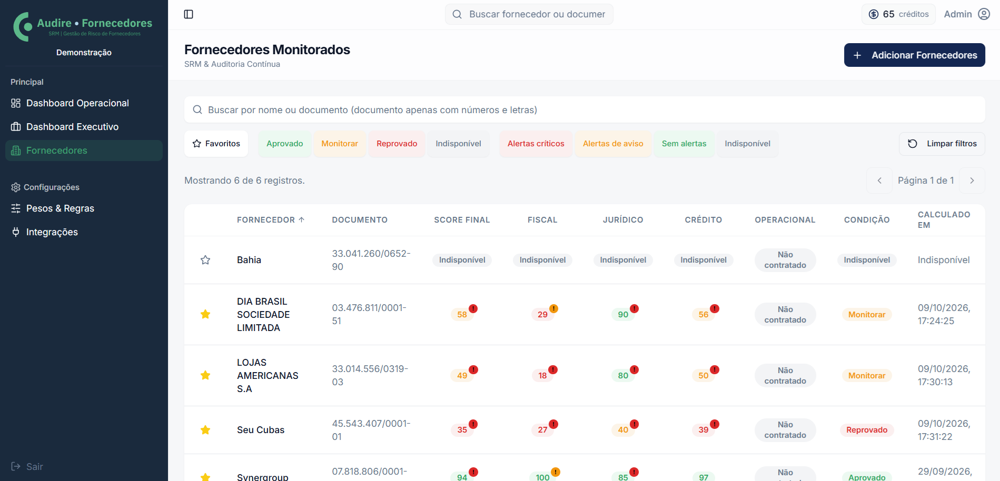

Audire Monitor
Compliance fiscal automatizado nas esferas federal, estadual e municipal, com painel multi-CNPJ, e-CAC, Sefaz, Prefeituras, CNDs, PER/DCOMP, DET e alertas por criticidade.
A Audire Suite monitora continuamente a regularidade fiscal, a cadeia de fornecedores e os impactos da Reforma Tributária, transformando eventos dispersos em histórico, alertas e inteligência para decisão.
Ative a frente que sua empresa precisa hoje e evolua para uma visão integrada de regularidade, cadeia e transição tributária.
Compliance fiscal automatizado nas esferas federal, estadual e municipal, com painel multi-CNPJ, e-CAC, Sefaz, Prefeituras, CNDs, PER/DCOMP, DET e alertas por criticidade.
Score fiscal, jurídico, operacional, financeiro e ESG, combinando dados externos com o histórico interno da empresa.
Auditoria, consolidação e monitoramento da Reforma Tributária do Consumo, da elegibilidade de crédito à Apuração Assistida.
Simulação com PGDAS-D e documentos fiscais reais para apoiar a escolha do regime e projetar créditos de IBS e CBS.
Conhecer a solução →





Audire Monitor
Audire Fornecedores
Início Monitor
Centralize alertas, mensagens e ações fiscais em uma visão única.
Conhecer o AudirePara justificar um investimento corporativo, a tecnologia precisa tocar custo, risco, produtividade ou caixa.
Reduza exposição a perdas, bloqueios, contingências e riscos tributários.
Retire equipes qualificadas de consultas, checagens e consolidações repetitivas.
Enxergue deterioração e criticidade de fornecedores antes do impacto operacional.
Histórico, critérios, alertas e evidências organizados para gestão e auditoria.
Uma plataforma web que reúne monitoramento fiscal, análise contínua de fornecedores, auditoria da Reforma Tributária e simulação para empresas do Simples Nacional.
Sim. As soluções foram apresentadas para grupos empresariais, indústrias, consultorias e contabilidades que precisam consolidar múltiplas unidades.
Sim. A empresa pode iniciar pela frente mais aderente ao risco atual e avaliar a evolução para uma visão integrada.
Os materiais apresentam dimensões fiscal, jurídica, operacional, financeira, crédito e ESG. O escopo aplicável deve ser confirmado no diagnóstico.
Selecione uma operação, grupo de CNPJs ou carteira de fornecedores e converse com a SNG sobre pontos de risco, esforço manual e oportunidades de observabilidade.